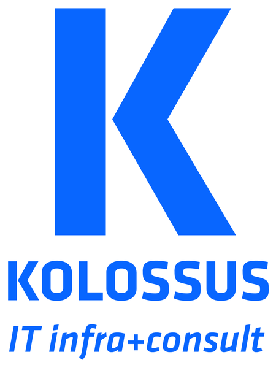

KOLOSSUS Consultoría en TI
Infraestructura
y consultoría.
Tecnología para que tu empresa opere con eficiencia, continuidad y tranquilidad.

Nuestra misión
“Acompañar a nuestros clientes en el éxito de su negocio, ayudando a administrar eficientemente la infraestructura tecnológica de su empresa.”
Servicios de TI
Consultoría e ingeniería
- Diagnóstico tecnológico
- Planificación estratégica
- Cuadro de Situación Tecnológico
- Asesoramiento integral
Infraestructura IT
- Redes cableadas e inalámbricas
- Servidores Windows y GNU/Linux
- VPN y conectividad
- Infraestructura industrial e IIoT
- Almacenamiento e impresión centralizada
Ciberseguridad y continuidad operativa
- Protección de infraestructura
- Control de acceso
- Certificados digitales y HTTPS/TLS
- Respaldos y recuperación de información
- Prevención de incidentes
Transformación digital
- Implementación y migración de Google Workspace
- Organización de información empresarial
- Gestión documental
- Administración de usuarios y permisos
- Herramientas colaborativas
Inteligencia artificial y automatizaciónLínea en desarrollo
- Relevamiento y optimización de procesos
- Evaluación e integración de herramientas
- Soluciones con inteligencia artificial
- Gestión del conocimiento
Soporte y gestión IT
- Mantenimiento preventivo y correctivo
- Monitoreo de infraestructura
- Administración de activos
- Licenciamiento de software
- Ventas corporativas de equipamiento
20+
Años de trayectoria
Desde fines de 2004
KOLOSSUS surgió con el objetivo de proveer soluciones profesionales en tecnologías vinculadas con la informática, garantizando la calidad, seriedad y respaldo que las empresas necesitan.
Nuestros pilares
- Eficiencia
- Operatividad
- Tranquilidad
Contacto empresarial
San Francisco, Córdoba, Argentina
Esp. Ing. Darío Julián Oberto
Socio gerente
Consultar por WhatsApp ↗dariooberto@kolossus.com.ar